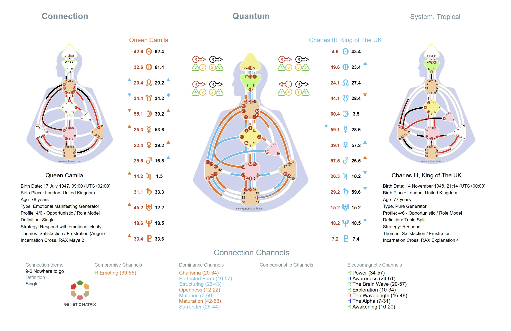

When two people come together, a new design emerges. The Connection Chart reveals the mechanics of a relationship by showing what is created between two individuals that neither possesses alone.
In Human Design, a Connection Chart, also called a Composite Chart, is created by overlaying two individual BodyGraphs. When the two charts are combined, Channels may be completed that neither person has on their own, Centers may become defined that neither has independently, and a distinct energetic configuration emerges. This composite design represents the mechanics of the relationship itself.
A Connection Chart is not about compatibility in the conventional sense. It reveals the specific dynamics that arise when two people share space. Some connections create shared definition that amplifies energy. Others create electromagnetic attraction. Still others introduce conditioning that can feel challenging, unfamiliar, or catalytic. The chart makes these dynamics visible and measurable.
One-Sided Definition in the Relationship
Dominance occurs when one person has a defined Channel and the other does not. This creates a consistent energetic influence in the relationship, where one person brings a fixed way of operating that shapes the shared dynamic. A dominance channel can be especially amplifying for the other person if it bridges two undefined Centers in their design. Dominance is not inherently negative, but it can create imbalance if the energy is not recognized consciously.
Compromised Definition
Compromise occurs when one person has a full Channel defined and the other has one of the Gates in that Channel. In the relationship, the person with the hanging Gate receives the opposite Gate from the other person and may feel as though they now have access to the whole Channel. But the Channel remains defined by the other person, not by them. This creates a compromised dynamic in which the person with the hanging Gate can mistake borrowed consistency for their own, often leading to resistance, frustration, and repeated friction if the mechanics are not recognized.
Attraction Through Polarity
An electromagnetic connection forms when one person has one Gate of a Channel and the other person has the opposite Gate, completing the Channel between them. This is the classic mechanism of attraction in Human Design. The completed Channel creates a new energy that neither person has on their own, and it can strongly amplify the energy in any undefined Center where one or both people carry the hanging Gate. At the same time, the chemistry is not always stable. The other person brings only one specific Line, Color, Tone, and Base expression of the Gate rather than the full range of possible variations, and that expression may be harmonious or dissonant with the Gate at the other end. The attraction remains, but it can run hot and cold, creating a dynamic that often feels impossible to settle and impossible to ignore.
Shared Channel
Companionship occurs when both people have the same Channel defined. This creates a sense of familiarity, mutual recognition, and ease around that energy because both already carry it in a fixed way. There is no new definition created between them and no electromagnetic attraction around that theme, so the value of companionship is often overlooked by the mind. Yet it can bring steadiness, ease, and a natural sense of being understood.
New Definition Between Two People
When two charts combine and new Channels are completed, previously undefined Centers can become defined in the Connection Chart. This means the relationship creates consistent, reliable energy that neither individual carries on their own. This new definition shapes the character and dynamics of the relationship itself.
Shared Social Experience
Centers that remain undefined in the Connection Chart reveal where the relationship stays open. These are areas of shared sensitivity where the connection is more susceptible to amplification, conditioning, and influence from other people or the environment. What remains undefined between two people becomes a place of shared social experience and can also be a source of vulnerability, learning, and wisdom.
More Than the Sum of Parts
A Connection Chart is not simply two charts added together. It represents a distinct energetic entity with its own Type, Authority, definition pattern, and dynamics. The relationship has its own mechanical signature that operates independently of either individual. This is why some relationships feel profoundly different from what either person experiences alone.
Awareness in Relationships
The Connection Chart is a tool for awareness, not judgment. It does not determine whether a relationship will succeed or fail. It reveals the specific mechanical dynamics at play so that both people can navigate the connection with greater understanding. This applies to romantic partnerships, friendships, business relationships, and family dynamics.
Note
The Connection Chart reveals the mechanics of the relationship, not its quality. A chart full of electromagnetic connections is not inherently better or worse than one with dominance or compromise. What matters is awareness of the dynamics and how each person navigates them through their own Strategy and Authority.
A Connection Chart shows how two individual designs combine to form a third, shared configuration. It reveals completed Channels, new definition, and the specific relational mechanics created between two people.

Example of a Human Design Connection Chart. Click to enlarge.
A Connection Chart is created by overlaying two individual BodyGraphs to reveal the mechanics of a relationship. When the two charts are combined, Channels may be completed, Centers may become defined, and a distinct energetic configuration emerges. This composite design shows the specific dynamics that exist between two people.
An electromagnetic connection occurs when one person has one Gate of a Channel and the other person has the opposite Gate, completing the Channel between them. This creates a new energy that neither person has individually and is one of the primary mechanisms of attraction in Human Design. It can feel magnetic and compelling, even when the chemistry runs hot and cold.
Dominance occurs when one person has a defined Channel and the other does not. Compromise occurs when one person has a full Channel defined and the other has one of the Gates in that Channel. In dominance, one person brings a fixed energy into the relationship. In compromise, the person with the hanging Gate may feel they have access to the whole Channel through the relationship, but the Channel remains defined by the other person.
No. The Connection Chart reveals the mechanical dynamics between two people, but it does not predict outcomes. A relationship with many electromagnetic connections is not inherently better than one with dominance, compromise, or companionship. The value of the chart is awareness of the mechanics, so each person can navigate the connection through their own Strategy and Authority.
Yes. Genetic Matrix provides tools to generate Connection Charts between two individuals. You can see the combined BodyGraph, identify electromagnetic, dominance, compromise, and companionship dynamics, and understand the new definition created in the relationship.
Explore the transpersonal mechanics that emerge in small groups of 3 to 5 people and how aura mechanics change in family dynamics.
Discover the small-group and career-oriented application of Human Design through the BG5 system.
Learn about larger transpersonal group mechanics and the structures that emerge beyond one-to-one connection.
Get Advanced or Pro to generate a Connection Chart and explore the specific mechanics between you and another person.
Get Advanced or Pro →